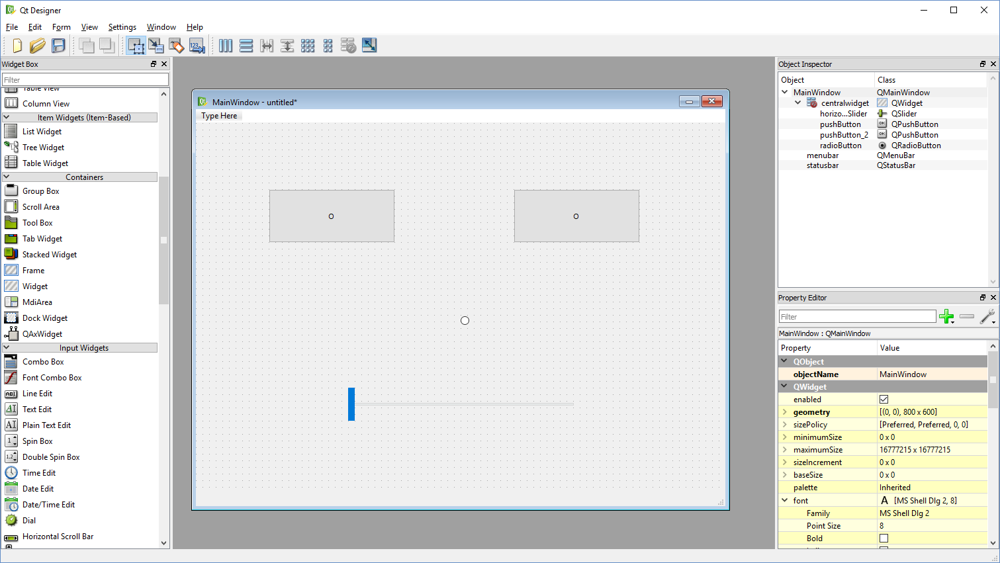

Introduction to
Python
Qt API
QGis API
QGis Plugin builder
QGis platform
QGis & Qt versions
Python version
API versions
QGis 3
Python 3
Qt 5
QGis + Python
- Python console
- Python plugins
- Custom Python scripts (without GUI)
- Custom Python applications (with GUI)
Python
Numbers
> a = 1
> type(a)
class 'int'
> b = 1.0
> type(b)
class 'float'
> 3/2
1.5
> int(3/2)
1
Text
> c = 'a'
> type(c)
class 'str'
> d = "b"
> type(d)
class 'str'
> c+d
'ab'
String formatting
> intro = 'This is an intro course to %s!'
> intro % 'Python'
'This is an intro course to Python!'
> students = 3
> 'We have %i students today.' % students
'We have 3 students today.'
> avg_time = 'The average time per slide is %0.3f seconds.'
> avg_time % (12/1.258)
'The average time per slide is 9.539 seconds.'
Operators
> a = 1
> a = a + 1
> a += 1
> a
3
> a == 4
False
Lists
> l = [1, 2, 3]
> type(l)
class 'list'
> len(l)
3
> l[0], l[-1]
(1, 3)
> l.append(4)
> l
[1, 2, 3, 4]
More
> l = [1, 2, 3]
> max(l)
3
> max(-2, 0)
0
> 'bugs:bunny'.split(':')
['bugs', 'bunny']
> import random
> random.randint(0, 10)
4
Conditionals
if a:
print('a')
elif b:
print('b')
else:
print('c')
Indentation
if a:
print('a')
if b:
print('b')
else:
print('c')
if a:
print('a')
if b:
print('b')
else:
print('c')
List comprehensions
> l = [1, 2, 3]
> [i*2 for i in l]
[2, 4, 6]
> [i*3 for i in l if i < 3]
[3, 6]
> sum([i*4 for i in l if i <= 2])
12
Generators
> l = [1, 2, 3]
> (i*2 for i in l)
generator object genexpr at 0x012F2510
>for j in (i*2 for i in l):
> print(j)
2
4
6
> sum((i*2 for i in l))
12
Functions
def longer(text, letterCount=3):
return text + text[-1]*letterCount
> longer('YOLO')
'YOLOOOO'
> longer('YOLO', 6)
'YOLOOOOOOO'
Generator functions
def split_letters(text):
for letter in text:
yield letter
> split_letters('YOLO')
generator object split_letters at 0x03F7C660
>for l in split_letters('YOLO'):
> print(l)
Y
O
L
O
Inner functions
def sumOfDoubles(list):
def double(number):
return number*2
sum = 0
for item in list:
sum += double(item)
return sum
> l = [1, 2, 3]
> sumOfDoubles(l)
12
> sum((i*2 for i in l))
12
Object orientation
class Game(object):
def __init__(self, name, maxPlayers):
self.name = name
self.maxPlayers = maxPlayers
def play(self, players):
if players > self.maxPlayers:
return 'Too many players!'
else:
return 'Enjoy your game of ' + self.name + '!'
> stratego = Game('Stratego', 2)
> risk = Game('Risk', 6)
> stratego.play(3)
'Too many players!'
> risk.play(3)
'Enjoy your game of Risk!'
Files
> f = open('file.csv', 'r')
> f.readline()
'City,Inhabitants\n'
>for line in f:
> print(line)
Brussel,179277
Gent,260341
Beersel,25069
> f.close()
Files
> f = open('file.csv', 'a')
> f.write('Antwerpen,523248\n')
> f.close()
# file.csv:
City,Inhabitants
Brussel,179277
Gent,260341
Beersel,25069
Antwerpen,523248
Qt
Framework for graphical user interfaces
(and other things)
Qt designer
Signals / Slots
QLabel
label = QLabel("Initial text.")
label.setText("Text changed to this text.")
label.setText("Or this.")
QLCDNumber
scorePanel = QLCDNumber()
scorePanel.display(42)
scorePanel.display(1337)
QPushButton
def start():
print('The game is on!')
button = QPushButton("Start")
button.setEnabled(True)
button.clicked.connect(start)
QProgressBar
progress = QProgressBar()
progress.setMinimum(0)
progress.setMaximum(100)
progress.setValue(24)
QWebView
webView = QWebView()
webView.setUrl(QUrl("http://www.qgis.org"))
webView.setHtml("")
QGis API
Installation
QgisInterface
> iface
qgis._gui.QgisInterface object at 0x00000205D4BEAD38
> iface.actionAddWmsLayer()
PyQt5.QtWidgets.QAction object at 0x0000020591EA5CA8
> iface.actionAddWmsLayer().trigger()
QgsPointXY
> point1 = QgsPointXY(100.0, 200.0)
> point2 = QgsPointXY(100.0, 500.0)
> point1.x()
100.0
> point1.y()
200.0
> point1.distance(point2)
300.0
> point1.azimuth(QgsPointXY(200.0,500.0))
18.43494882292201
QgsMapCanvas
def printPoint(point):
print(point.x(), point.y())
canvas = iface.mapCanvas()
canvas.xyCoordinates.connect(printPoint)
QgsMapTool
def printPoint(point):
print(point.x(), point.y())
canvas = iface.mapCanvas()
mapToolPoint = QgsMapToolEmitPoint(canvas)
mapToolPoint.canvasClicked.connect(printPoint)
canvas.setMapTool(mapToolPoint)
QgsCoordinateReferenceSystem
wgs84 = QgsCoordinateReferenceSystem("EPSG:4326")
lambert72 = QgsCoordinateReferenceSystem("EPSG:31370")
webmercator = QgsCoordinateReferenceSystem("EPSG:3857")
canvasCRS = iface.mapCanvas().mapSettings().destinationCrs()
canvasCRS.description()
# 'Belge 1972 / Belgian Lambert 72'
QgsCoordinateTransform
t = QgsCoordinateTransform(wgs84, canvasCRS, QgsProject.instance())
transformedPoint = t.transform(QgsPointXY(2.5, 51.2))
transformedPoint.x()
# 19394.170927130646
transformedPoint.y()
# 211645.48773605935
QgsVectorLayer
vectorLayer = iface.activeLayer()
# qgis._core.QgsVectorLayer object at 0x0000020D075DB678
feature = vectorLayer.getFeature(1)
# qgis._core.QgsFeature object at 0x0000020D075DFE58
QgsFeature
feature = vectorLayer.getFeature(1)
feature.attribute('name')
# 'Gent-Dampoort'
feature.attribute('wikipedia')
# 'nl:Station Gent-Dampoort'
feature.geometry().asPoint()
# QgsPointXY: POINT(3.74067939999999988 51.05599120000000113)
Starting a QGis plugin
Installation
- Osgeo4W shell
py3_envqt5_envpython3 -m pip install pb_tool
Python environment

Plugin builder
Files
- metadata.txt
- Information about the plugin
- __init__.py
- Classfactory
- geogame.py
- Base plugin class
- geogame_dockwidget.py
- Class for dockwidget (user interface)
- geogame_dockwidget_base
- Dockwidget UI itself (xml)
Deploy
- Osgeo4W shell
py3_envqt5_envcd "C:\path_to_geogame"pb_tool deploy
<widget class="QWebView" name="webView" native="true">
<property name="url" stdset="0">
<url>
<string>about:blank</string>
</url>
</property>
</widget>